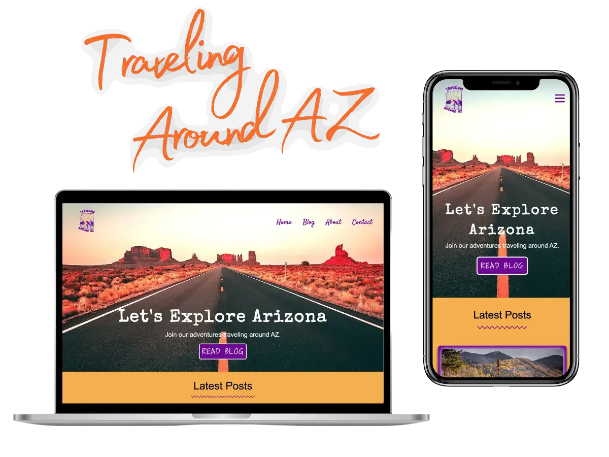
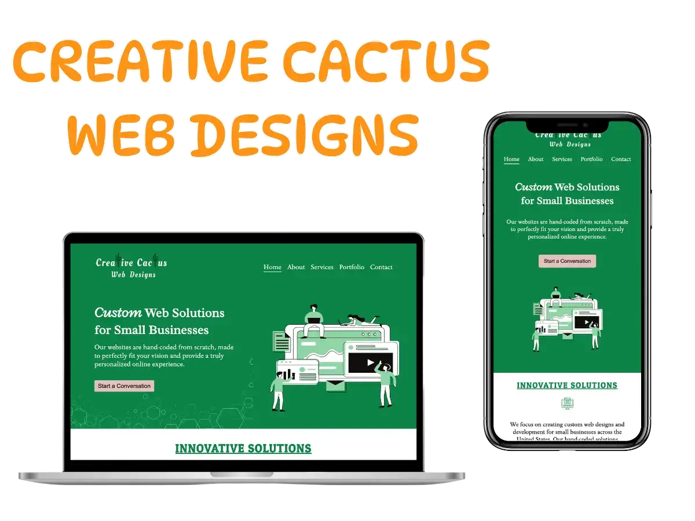
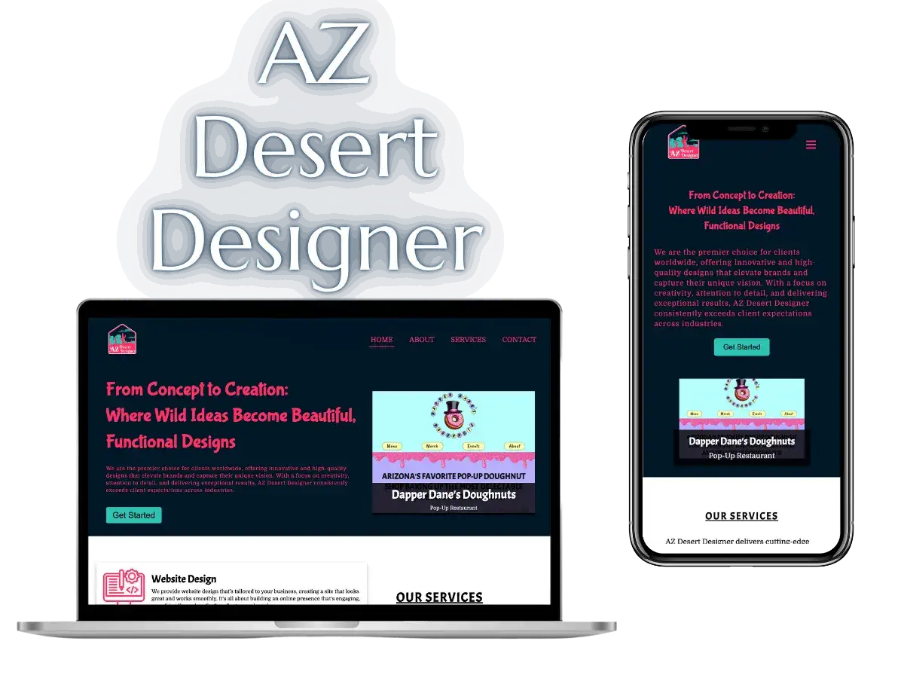
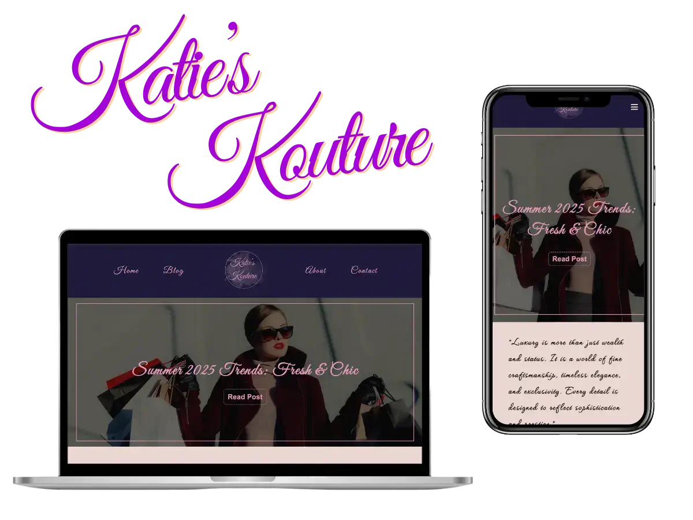

Jon's Portfolio of Projects

If you have not guessed by now, I love ARIZONA and am a proud native Arizonan! So why not develop a travel blog showcasing the beautiful state of Arizona. Join me in a journey exploring the state and finding cool spots that make Arizona, Arizona. I designed the logo using Canva, incorporated colors representing AZ, and overall wanted to create a responsive site that anyone can access and enjoy. I developed the site with HTML, CSS, and JavaScript.
View Site
Creative Cactus Web Designs grew out of my love for building beautiful and functional websites that stand out. That’s how Creative Cactus Web Designs came to life. My goal was to create a space where I can bring bold ideas to the web with style and purpose. Inspired by the vibrant charm of the desert, I created the logo and design elements to reflect a unique and creative cacti vibe. Designing websites that are both visually appealing and seamlessly functional across all devices is what I focus on. This site was built using HTML, CSS, and JavaScript, with a focus on minimalism, usability, and personality.
View Site
AZ Desert Designer was born from a passion for both design and the desert. My goal was to create a functionally responsive website that speaks directly to clients in need of creative design services, whether for a new brand, a bold website, or anything in between. I also carved out a space to showcase my love of photography, giving the site a personal, visual edge. It’s a blend of artistry and utility, built to inspire trust, spark ideas, and show what’s possible when creativity meets clean code under the Arizona sun.
View Site
Katie’s Kouture was created out of love for creativity, conversation, and, of course, couture. I developed this blog as a personal gift to my wife, giving her a beautifully designed space to share her passions with the world. From high fashion and sparkling jewelry to luxury real estate, mouthwatering eats, dream cars, and inspiring art, Katie’s Kouture is a stylish hub where ideas shine and stories unfold. It's a digital runway for her taste, insights, and flair wrapped in a responsive, elegant design that matches her vision.
View Site